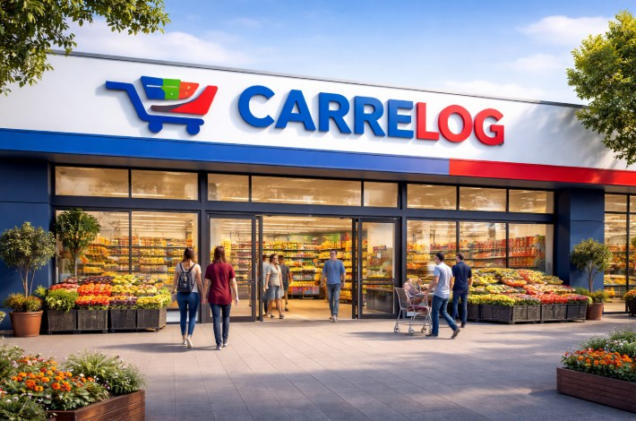

Bienvenido a Carrelog
Tu supermercado online donde encontrarás productos frescos y saludables.
Compra de forma rápida y organiza tu alimentación semanal de manera sencilla.

Organiza tu compra semanal
Descubre cómo ahorrar tiempo preparando tus comidas de la semana.